File: 000180.gt.txt (if the image is defective, simply delete all Arabic text and the line will be excluded)
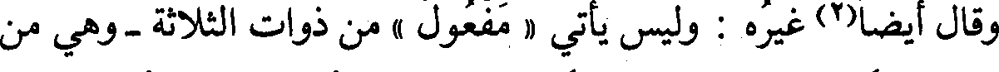
وقال أيضا(2) غيره : وليس يأتي « مفعول » من ذوات الثلاثة - وهي من
File: 000181.gt.txt (if the image is defective, simply delete all Arabic text and the line will be excluded)
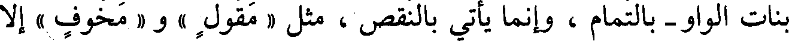
بنات الواو - بالتمام ، وإنما يأتي بالنقص ، مثل « مقول » و« مخوف » إلا
File: 000182.gt.txt (if the image is defective, simply delete all Arabic text and the line will be excluded)
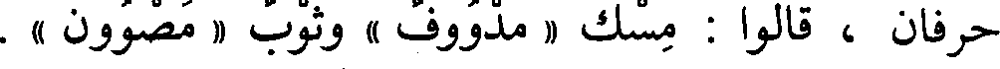
حرفان ، قالوا : مسك « مدووف » وثوب « مصوون » .
File: 000183.gt.txt (if the image is defective, simply delete all Arabic text and the line will be excluded)
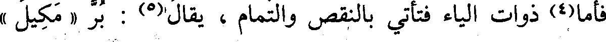
فأما(4) ذوات الياء فتأتي بالنقص والتمام ، يقال(5) : بر « مكيل »
File: 000184.gt.txt (if the image is defective, simply delete all Arabic text and the line will be excluded)
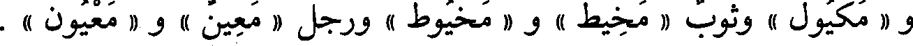
و « مكيول » وثوب « مخيط » و « مخيوط » ورجل « معين » و « معيون » .
File: 000185.gt.txt (if the image is defective, simply delete all Arabic text and the line will be excluded)
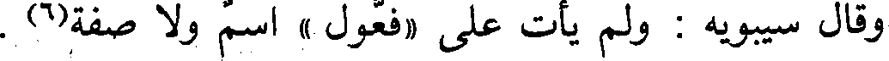
وقال سيبويه : ولم يأت على « فعول » اسم ولا صفة(6) .
File: 000186.gt.txt (if the image is defective, simply delete all Arabic text and the line will be excluded)
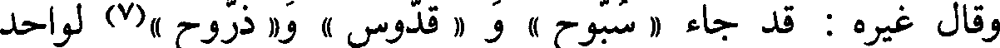
وقال غيره : قد جاء « سبوح » و « قدوس » و« ذروح »(7) لواحد
File: 000187.gt.txt (if the image is defective, simply delete all Arabic text and the line will be excluded)
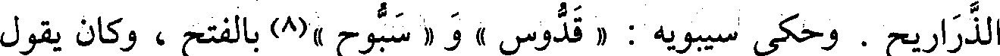
الذراريح . وحكى سيبويه : « قدوس » و « سبوح »(8) بالفتح ، وكان يقول
File: 000188.gt.txt (if the image is defective, simply delete all Arabic text and the line will be excluded)
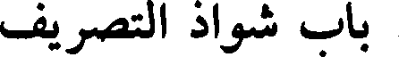
باب شواذ التصريف
File: 000189.gt.txt (if the image is defective, simply delete all Arabic text and the line will be excluded)
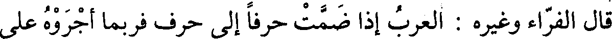
قال الفراء وغيره : العرب إذا ضمت حرفاإلى حرف فربماأجروه على
File: 000190.gt.txt (if the image is defective, simply delete all Arabic text and the line will be excluded)
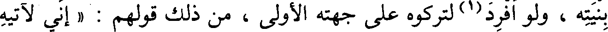
بنيته ، ولو أفرد(1) لتركوه على جهته الأولى ؛ من ذلك قولهم : « إني لآتيه
File: 000191.gt.txt (if the image is defective, simply delete all Arabic text and the line will be excluded)
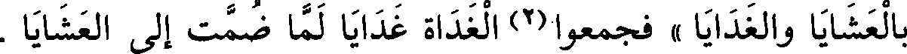
بالعشايا والغدايا » فجمعوا(2) الغداة غدايا لما ضمت إلى العشايا .
File: 000192.gt.txt (if the image is defective, simply delete all Arabic text and the line will be excluded)
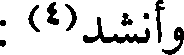
وأنشد(4) :
File: 000193.gt.txt (if the image is defective, simply delete all Arabic text and the line will be excluded)
هتاك أخبية ولاج أبوبة يخلط بالجد منه البر واللينا
File: 000194.gt.txt (if the image is defective, simply delete all Arabic text and the line will be excluded)
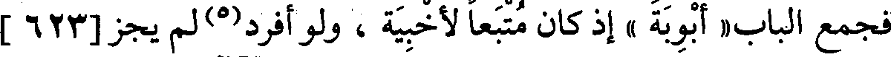
فجمع الباب« أبوبة » إذ كان متبعا لأخبية ، ولو أفرد(5) لم يجز[623]
File: 000195.gt.txt (if the image is defective, simply delete all Arabic text and the line will be excluded)
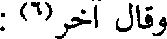
وقال آخر(6) :
File: 000196.gt.txt (if the image is defective, simply delete all Arabic text and the line will be excluded)
أزمان عيناء سرور المسرور عيناء حوراء من العين الحير
File: 000197.gt.txt (if the image is defective, simply delete all Arabic text and the line will be excluded)
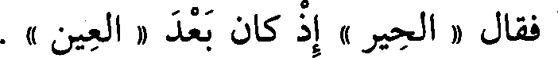
فقال « الحير » إذ كان بعد « العين » .
File: 000198.gt.txt (if the image is defective, simply delete all Arabic text and the line will be excluded)
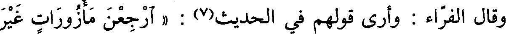
قال الفراء : وأرى قولهم في الحديث(7) : « ارجعن مأزورات غير
File: 000199.gt.txt (if the image is defective, simply delete all Arabic text and the line will be excluded)
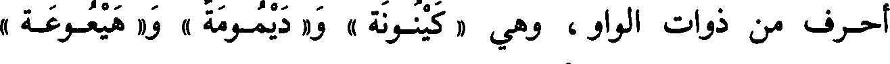
أحرف من ذوات الواو ، وهي « كينونة » و « ديمومة » و« هيعوعة »
File: 000200.gt.txt (if the image is defective, simply delete all Arabic text and the line will be excluded)
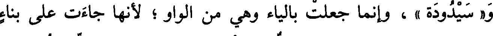
و« سيدودة » ، وإنما جعلت بالياء وهي من الواو ؛ لأنها جاءت على بناء
File: 000201.gt.txt (if the image is defective, simply delete all Arabic text and the line will be excluded)
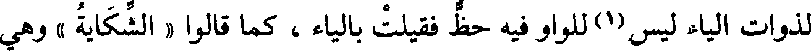
لذوات الياء ليس(1) للواو فيه حظ فقيلت بالياء ، كما قالوا « الشكاية » وهي
File: 000202.gt.txt (if the image is defective, simply delete all Arabic text and the line will be excluded)
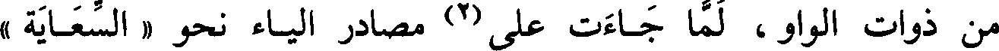
من ذوات الواو ، لما جاءت على(2) مصادر الياء نحو « السعاية »
File: 000203.gt.txt (if the image is defective, simply delete all Arabic text and the line will be excluded)
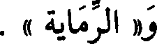
و« الرماية » .
File: 000204.gt.txt (if the image is defective, simply delete all Arabic text and the line will be excluded)
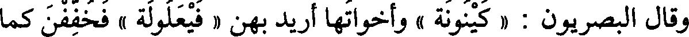
وقال البصريون : « كينونة » وأخواتها أريد بهن « فيعلولة » فخففن كما
File: 000205.gt.txt (if the image is defective, simply delete all Arabic text and the line will be excluded)
خفف الميت .
File: 000206.gt.txt (if the image is defective, simply delete all Arabic text and the line will be excluded)
قال الفراء : أريد بهن « فعلولة » ففتحوا أولها كراهية أن تصير الياء
File: 000207.gt.txt (if the image is defective, simply delete all Arabic text and the line will be excluded)
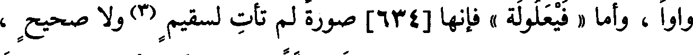
واوا ، وأما « فيعلولة » فإنها[634] صورة لم تأت لسقيم(3) ولا صحيح ،
File: 000208.gt.txt (if the image is defective, simply delete all Arabic text and the line will be excluded)
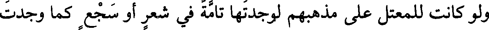
ولو كانت للمعتل على مذهبهم لوجدتها تامة في شعر أو سجع كما وجدت
File: 000209.gt.txt (if the image is defective, simply delete all Arabic text and the line will be excluded)
الميت والميت .
To Save: `Ctrl+s`, make sure to choose `Webpage, complete`!